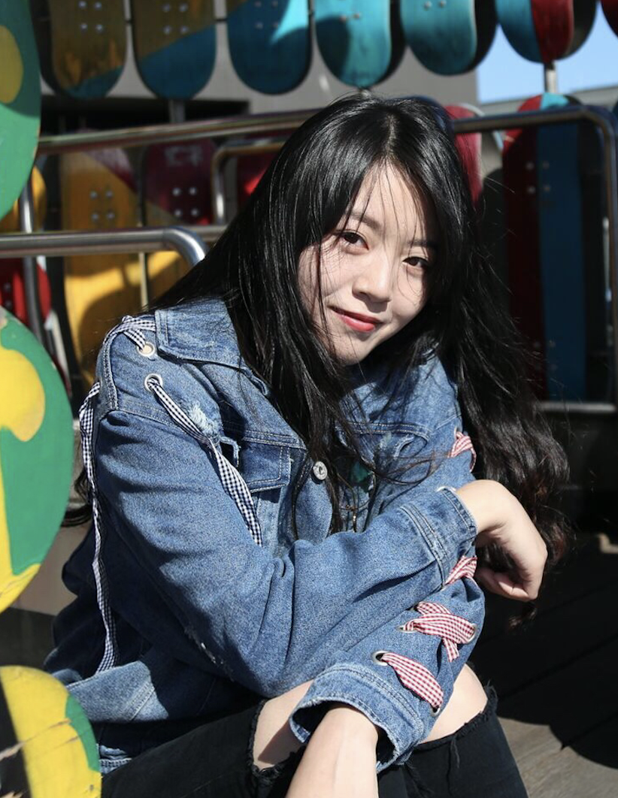
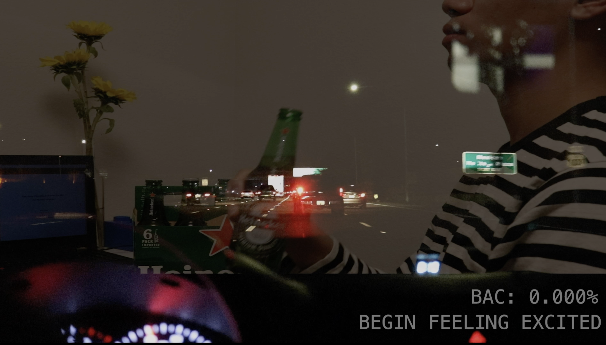
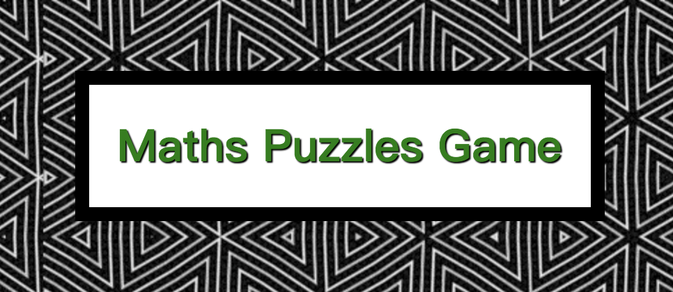
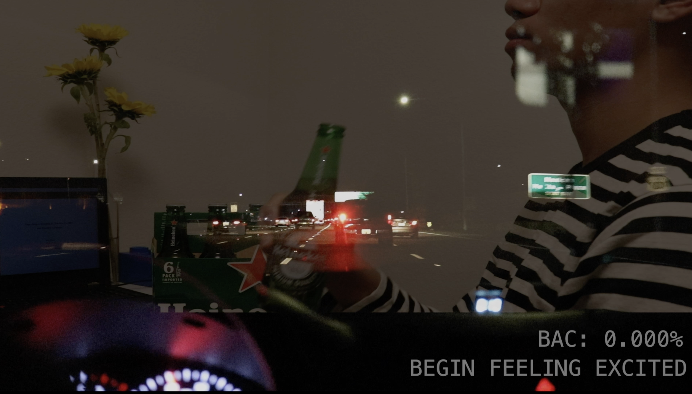
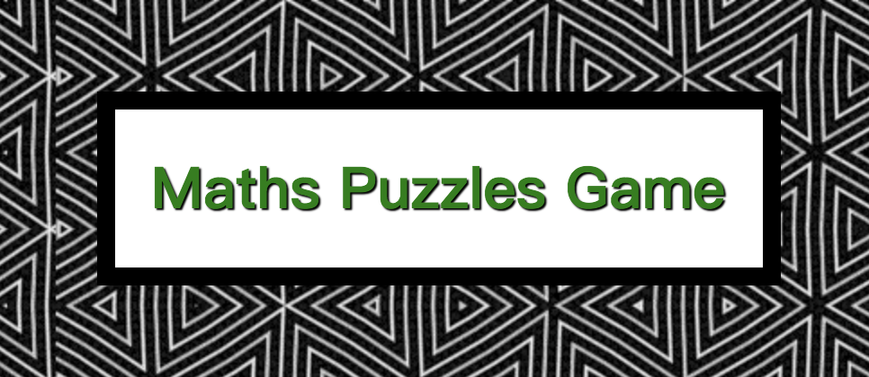

YingHong Yuan
Artist Statement
My name is YingHong Yuan. An Undergraduate student who majoring Digital Media Art at San Jose State University. My artworks inspired by my reflection on some social problems and the expression of personal feelings. At this stage, most of my works are digital images made by Illustrator and Photoshop and were finished by following the course requirements of the college. I also expanded more areas of digital media art, such as video art and installation art. I consider the social problem and put my thought into the artworks represents to the audience by the visual effect. By learning video art and installation art, I understand how the environment and certain devices can produce unexpected results by fusion with images or videos correctly. In addition, I also made some 3-dimensional Physical Artworks, by learning how to make physical artworks, I discovered the importance of materials and contents of the artwork, and then projects the digital media art onto these physical artworks.
Artist Portfolio
 


